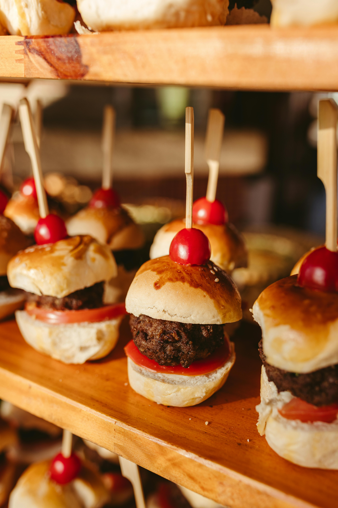

Mini Sanduiche Focaccia, Pesto de Pistache e Queijo Fresco
Deliciosos mini sanduíches feitos com focaccia artesanal assada no dia, recheados com pesto de pistache caseiro e queijo fresco cremoso. Perfeitos para eventos, festas ou para saborear em família. Cada bandeja contém 20 unidades cuidadosamente preparadas.
- Focaccia artesanal fresca
- Pesto de pistache 100% natural
- Queijo fresco de alta qualidade
- Perfeito para 10-15 pessoas
- Preparado no dia da entrega
- Embalagem especial para eventos
Sobre o Produto
Nossos Mini Sanduíches de Focaccia são uma verdadeira obra-prima culinária. Cada peça é cuidadosamente preparada por nossos chefs experientes, utilizando apenas ingredientes selecionados e de alta qualidade.
A focaccia é assada diariamente em nosso forno artesanal, garantindo uma textura macia por dentro e levemente crocante por fora. O pesto de pistache é preparado na hora, mantendo o sabor intenso e a cor vibrante. O queijo fresco complementa perfeitamente o conjunto, adicionando cremosidade e suavidade.
Ideal para eventos corporativos, aniversários, casamentos ou simplesmente para desfrutar com a família. Cada bandeja é apresentada de forma elegante, pronta para ser servida.
Lista de Ingredientes
⚠️ Contém: Glúten, leite e frutos secos (pistache). Pode conter traços de ovos e soja.
Tabela Nutricional
Porção de 100g (aproximadamente 1 mini sanduíche)
| Nutriente | Quantidade por Porção | %VD* |
|---|---|---|
| Valor Energético | 285 kcal = 1197 kJ | 14% |
| Carboidratos | 32g | 11% |
| Proteínas | 9g | 12% |
| Gorduras Totais | 12g | 22% |
| Gorduras Saturadas | 4g | 18% |
| Gorduras Trans | 0g | - |
| Fibra Alimentar | 2,5g | 10% |
| Sódio | 320mg | 13% |
*Valores diários de referência com base em uma dieta de 2.000 kcal ou 8.400 kJ. Seus valores diários podem ser maiores ou menores dependendo de suas necessidades energéticas.
Avaliações de Clientes
Simplesmente perfeito! Pedi para o aniversário da minha filha e todos os convidados elogiaram. A focaccia estava fresquinha e o pesto de pistache é divino. Com certeza vou pedir novamente!
Excelente qualidade! Usei em um evento corporativo e foi um sucesso. O tamanho é perfeito para servir como finger food. A apresentação também é impecável. Recomendo!
Muito saboroso! Único ponto é que gostaria que viesse mais unidades, mas pela qualidade vale cada centavo. O sabor do pesto é incrível e a textura da focaccia é perfeita.
Produto premium de verdade! A Padaria sempre surpreende com a qualidade. Os ingredientes são frescos e você percebe o cuidado no preparo. Viraram meu pedido favorito!
Maravilhoso! Fiz uma festa em casa e todos adoraram. O queijo fresco combina perfeitamente com o pesto. A entrega foi super rápida e o produto chegou bem acondicionado. Nota 10!
Você também pode gostar